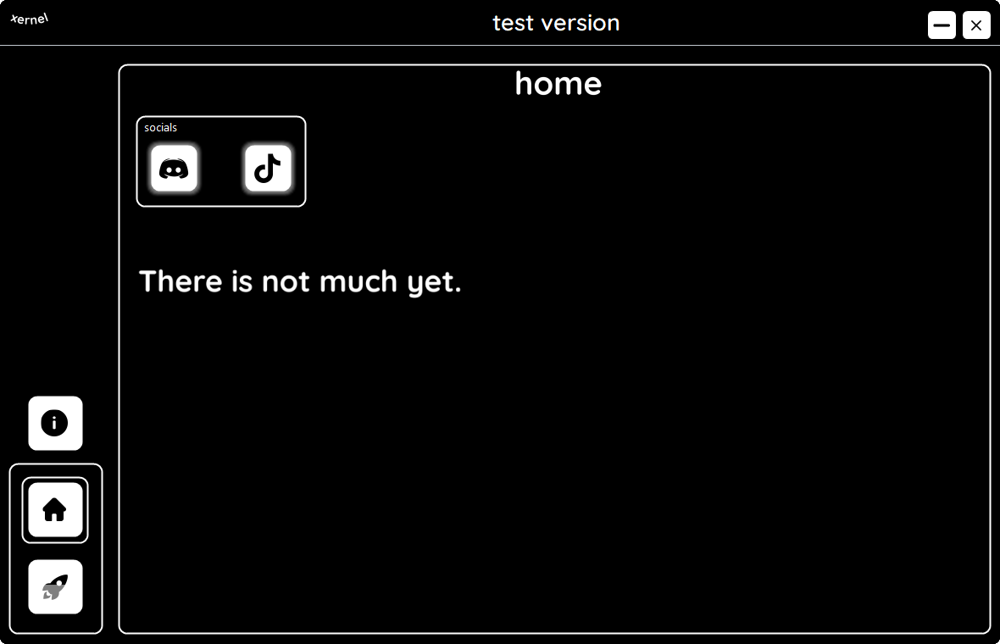

What is Xernel?
Xernel is a windows optimization tool for completly free.
You can download it and optimize your pc,
but there is not much optimization.
Info
Dont freak out if smartscreen cannot recognise the app,
shortly i did not sign the app.
I dont want to buy it, it will cost like $200 - $600+/year.